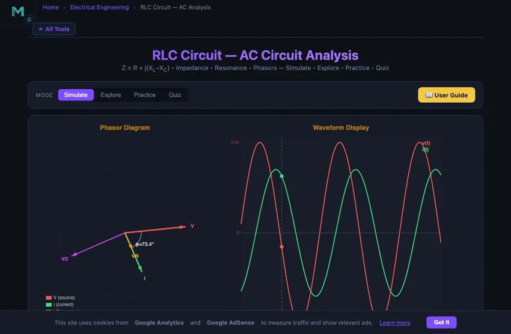

RLC Circuit — AC Circuit Analysis
Z = R + j(XL−XC) • Impedance • Resonance • Phasors — Simulate • Explore • Practice • Quiz
3D Model — Circuits: RLC Resonance & AC
Interactive 3D model of this apparatus. Pick a component on the right, then drag to rotate · scroll to zoom · right-drag to pan.
1 Overview
The RLC Circuit Simulator is an interactive tool for analysing alternating current (AC) circuits containing a resistor (R), inductor (L), and capacitor (C). It demonstrates the interplay between impedance, resonance frequency, phasor diagrams, power factor, bandwidth, and Q factor. You can switch between series and parallel RLC configurations, adjust component values and frequency, and watch animated phasor vectors and sinusoidal waveforms update in real time.
This simulator targets electrical engineering students studying AC circuit analysis, electronics technicians working with filters and oscillators, and engineering trainees learning about impedance matching and frequency-selective circuits.
2 Building the Circuit
The simulator opens in Simulate mode with a series RLC circuit: R = 100 Ω, L = 10 mH, C = 10 μF, f = 50 Hz, and Vpeak = 12 V. To begin experimenting:
- Choose Series RLC or Parallel RLC using the circuit type pills.
- Drag the R, L, C, and f sliders to change component values and frequency. The canvas and readouts update instantly.
- Adjust Vpeak to change the AC source amplitude.
- Load a Preset such as Resonance, High-Q Filter, Low-Pass, or Radio Tuner to explore common configurations.
Use the four mode tabs — Simulate, Explore, Practice, Quiz — to progress from hands-on experimentation to structured learning and self-assessment.
3 Energising the Circuit
Simulate mode is the main interactive workspace. The canvas shows the circuit schematic, rotating phasor diagram, and AC waveforms. Key controls:
- R slider (1–1000 Ω): Sets resistance. Higher R increases damping and lowers the Q factor.
- L slider (0.1–100 mH): Sets inductance. Inductive reactance XL = 2πfL increases with both inductance and frequency.
- C slider (0.1–100 μF): Sets capacitance. Capacitive reactance XC = 1/(2πfC) decreases as capacitance or frequency increases.
- f slider (1–1000 Hz): Sets the AC source frequency. Sweep through resonance to see impedance drop to minimum (series) or rise to maximum (parallel).
- Vpeak slider (1–24 V): Sets the peak amplitude of the AC source.
The readout cards display: impedance Z, phase angle φ, RMS current Irms, inductive reactance XL, capacitive reactance XC, resonant frequency f₀, power factor cos(φ), and Q factor. Watch the phasor diagram to see voltage leading or lagging current depending on whether the circuit is inductive (XL > XC) or capacitive (XC > XL).
4 Circuit Theory
Explore mode provides structured reference material in three categories:
- AC Fundamentals: Covers sinusoidal waveforms, peak vs RMS values, frequency and period, and the concept of phase angle between voltage and current.
- Impedance & Reactance: Explains inductive reactance (XL = 2πfL), capacitive reactance (XC = 1/(2πfC)), total impedance (Z = √(R² + (XL−XC)²)), and the impedance triangle.
- Resonance & Power: Describes the resonance condition (f₀ = 1/(2π√(LC))), Q factor (Q = (1/R)√(L/C)), bandwidth (BW = f₀/Q), real and reactive power, and power factor correction.
Select any concept to see its detailed explanation with formulas and an interactive canvas illustration.
5 Try a Problem
Practice mode generates calculation problems on RLC circuits, such as: “Find the impedance of a series RLC circuit with R = 50 Ω, XL = 80 Ω, XC = 30 Ω”, “Calculate the resonant frequency for L = 20 mH and C = 5 μF”, or “What is the power factor when φ = 30°?” Enter your answer and receive step-by-step feedback.
Quiz mode tests your knowledge with 5 multiple-choice questions on impedance, resonance, phasors, Q factor, and AC power. Review your results and explanations at the end.
6 Field Tips
- Use the Resonance preset to see the dramatic effect: impedance drops to R, current peaks, and phase angle becomes zero in a series RLC circuit.
- Slowly sweep the frequency slider through the resonant point and observe how phasor angles transition from capacitive (current leads) to inductive (voltage leads).
- Compare series and parallel RLC behaviour at the same resonant frequency — series gives minimum Z, parallel gives maximum Z.
- Lower R to increase Q factor and narrow the bandwidth. A sharp resonance peak is desirable for radio tuning circuits.
- The power factor equals cos(φ). At resonance, power factor is unity (1.00), meaning all power is real power with no reactive component.
- Remember that XL increases linearly with frequency while XC decreases inversely — they must cross at f₀.
- For filter design, the −3 dB bandwidth is centred on f₀ and equals f₀/Q. Higher Q means a narrower passband.
Understanding RLC Circuits — Free Interactive AC Circuit Simulator

An RLC circuit contains a resistor (R), inductor (L), and capacitor (C) connected to an alternating current (AC) source. It is one of the most important circuits in electrical engineering, forming the basis of filters, oscillators, and tuning circuits. The interplay between inductive reactance XL = 2πfL and capacitive reactance XC = 1/(2πfC) determines the circuit’s impedance, phase angle, and frequency response. Our interactive simulator lets you adjust R, L, C, and frequency in real time and observe animated phasor diagrams, sinusoidal waveforms, and all key readouts instantly.
Impedance and Phase Angle in AC Circuits
In a series RLC circuit, the total impedance is Z = √(R² + (XL−XC)²). The phase angle between voltage and current is φ = arctan((XL−XC)/R). When the circuit is inductive (XL > XC), voltage leads current; when capacitive (XC > XL), current leads voltage. The simulator displays these relationships through rotating phasor vectors and phase-shifted sine waves so you can see exactly how changing any component affects circuit behaviour.
Resonance — The Special Frequency
Resonance occurs at f0 = 1/(2π√(LC)), where XL = XC. At this frequency, the impedance of a series RLC circuit drops to its minimum value (Z = R), current reaches its maximum, and the phase angle becomes zero. In a parallel RLC circuit, resonance produces maximum impedance instead. Resonance is the principle behind radio tuning, bandpass filters, and many sensor circuits. The simulator highlights the resonant frequency in the readout panel and lets you see the dramatic change in current and phase as you sweep through resonance.
Quality Factor and Bandwidth
The Q factor (quality factor) measures the sharpness of resonance. For a series RLC circuit, Q = (1/R)√(L/C) or equivalently Q = f0/BW, where BW is the bandwidth between the half-power (−3 dB) points. A high-Q circuit has a narrow bandwidth and strong frequency selectivity, making it ideal for signal filtering. A low-Q circuit has a wide bandwidth and responds to a broader range of frequencies. Adjust R in the simulator to see how damping affects Q and the sharpness of the resonance peak.
How a Radio Tunes — The Single Best Example of Resonance
Every AM radio receiver in history used a tuned RLC circuit to pick out one station from the crowd. The antenna picks up signals from every transmitter within range — perhaps fifty broadcasters all jostling on the same wire. The tuning capacitor in series with the antenna inductor forms an RLC tank circuit. At one specific frequency (set by the variable capacitor knob), the circuit resonates: impedance crashes, current flows, the signal gets to the demodulator. At every other frequency, the impedance is high, current is suppressed, those stations are filtered out.
The Q factor governs selectivity. A high-Q tank (low resistance, big inductor-to-capacitor ratio) picks one station cleanly but cuts off if you twist the knob a fraction. A low-Q tank is forgiving on tuning but bleeds adjacent stations in. AM broadcast spacing is 9 kHz; receivers typically need Q around 100 to separate them cleanly at the 540−1700 kHz band.
RLC Circuits in Real Engineering
- Power-factor correction. Industrial loads (motors, transformers) draw inductive current that lags voltage, lowering power factor and increasing utility bills. Banks of capacitors in parallel cancel the inductive reactance, returning the load to near-unity power factor.
- Antenna matching networks. The impedance of an antenna varies with frequency. Matching networks (typically L-C ladder filters) transform that varying impedance to the 50 Ω the transmitter wants to see.
- Switching power supplies. Modern SMPS use LC output filters to convert pulse-width-modulated rectangular waves back to clean DC. The LC corner frequency is chosen well below the switching frequency.
- Mechanical analogue. Spring-mass-damper systems obey the identical differential equation as RLC circuits, with k↔1/C, m↔L, c↔R. The resonance peak of a car suspension is exactly the same phenomenon — just dressed in mechanical units.
Explore Related Simulators
If you found this RLC Circuit simulator helpful, explore our Ohm’s Law simulator, RC Circuit simulator, Transformer simulator, Wheatstone Bridge simulator, Star-Delta Conversion simulator, and Faraday's Law simulator for more hands-on electrical engineering practice.